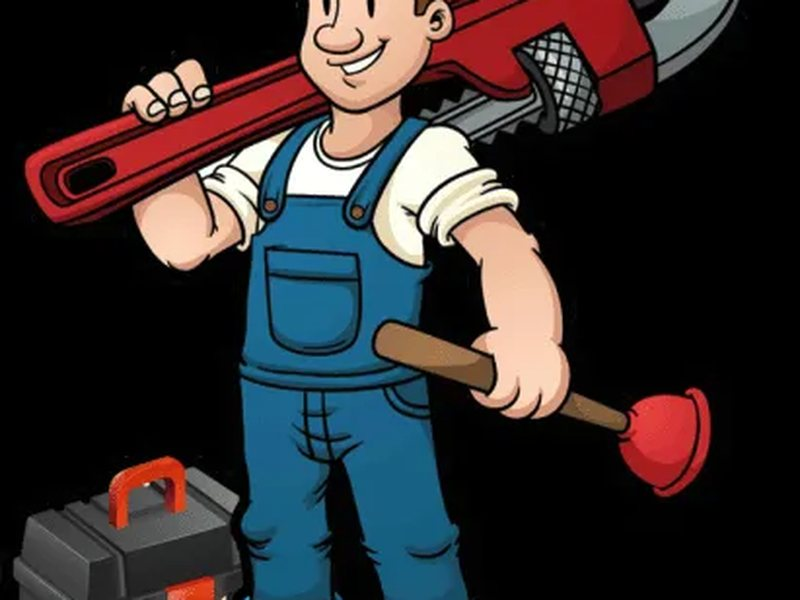

Our mission
To give households and small businesses in the Tshwane metro plumbing they can budget for: a fair price agreed in advance, work done by a qualified plumber, and a guarantee in writing.
Eleven years, four plumbers, one rule: quote the job before you start it.
John Mahlangu qualified as a plumber in 2009 and spent six years on commercial sites in Centurion before buying a second-hand bakkie and taking his first private call-out in . That first year was one man, one toolbox, and word of mouth.
Today the business runs three vehicles and four qualified plumbers out of a workshop in Waterkloof Ridge. What has not changed is the way the work is priced: the plumber diagnoses the fault, writes the price down, and only then picks up a spanner.
We are registered with the Plumbing Industry Registration Board, carry R5 million in public liability cover, and issue a Certificate of Compliance on every geyser and gas installation.

To give households and small businesses in the Tshwane metro plumbing they can budget for: a fair price agreed in advance, work done by a qualified plumber, and a guarantee in writing.
To be the plumbing business Gauteng property managers recommend by default — known for turning up when we said we would and invoicing exactly what we quoted.
Every plumber on the team is qualified, background-checked and arrives in a branded vehicle with photo identification.
Founder and master plumber
Qualified 2009. Specialises in leak detection and geyser replacement. Handles every emergency call taken after 20:00.
Senior plumber
Ten years in drainage and sewer work. Runs the CCTV inspection and high-pressure jetting rig.
Plumber and gas practitioner
SAQCC-registered for liquid petroleum gas. Installs gas geysers, hobs and issues gas Certificates of Compliance.
Scheduler and office manager
The person who answers the phone, confirms your slot and sends the invoice. Keeps three vans in the right suburb at the right time.
Our standard call-out area covers a 35km radius of Pretoria Central. There is no travel surcharge inside that area.
Registered with the Plumbing Industry Registration Board under number 2015/PL/0483. This allows us to issue Certificates of Compliance for geyser and water installations, which most household insurers require.
R5 million cover through Santam. A certificate is available on request and is supplied automatically for body corporate and commercial work.
One team member holds SAQCC Gas authorisation, so LP gas installations are signed off legally rather than sub-contracted out.
Labour on every job is guaranteed for 12 months. Parts carry whatever warranty the manufacturer supplies, which we register on your behalf.
Book a slot online, or call the office and speak to Lerato.